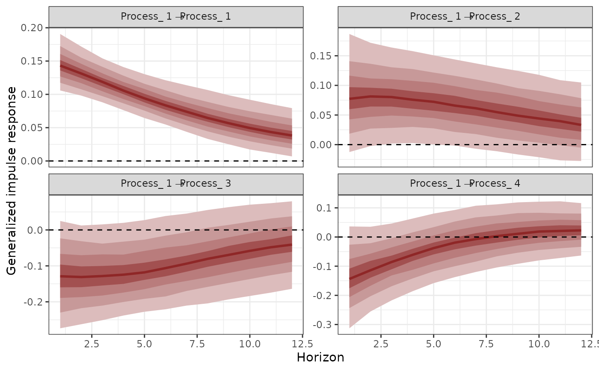
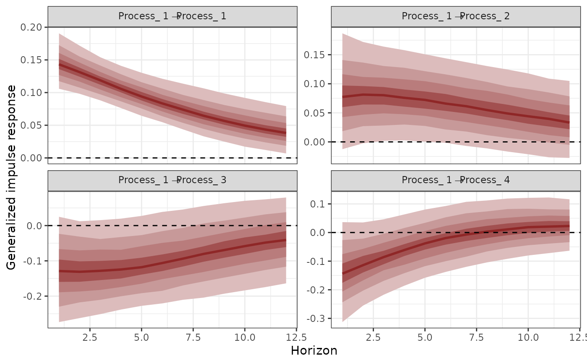
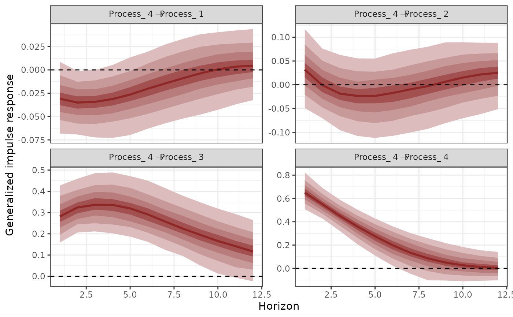
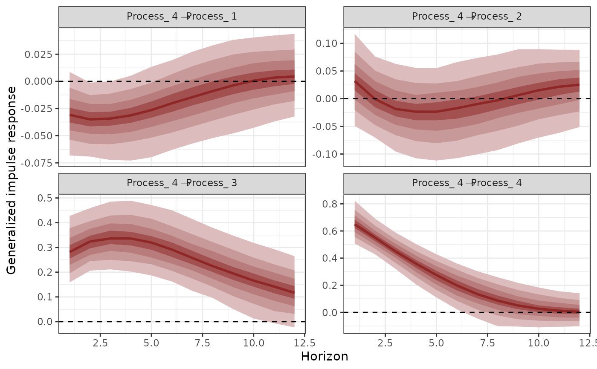

Compute Generalized or Orthogonalized Impulse Response Functions (IRFs) from
mvgam models with Vector Autoregressive dynamics
Usage
irf(object, ...)
# S3 method for mvgam
irf(object, h = 10, cumulative = FALSE, orthogonal = FALSE, ...)Arguments
- object
listobject of classmvgamresulting from a call tomvgam()that used a Vector Autoregressive latent process model (either asVAR(cor = FALSE)orVAR(cor = TRUE); seeVAR()for details)- ...
ignored
- h
Positive
integerspecifying the forecast horizon over which to calculate the IRF- cumulative
Logicalflag indicating whether the IRF should be cumulative- orthogonal
Logicalflag indicating whether orthogonalized IRFs should be calculated. Note that the order of the variables matters when calculating these
Value
An object of mvgam_irf-class containing the posterior IRFs. This
object can be used with the supplied S3 functions plot.mvgam_irf()
Details
See mvgam_irf-class for a full description of the quantities that are
computed and returned by this function, along with key references.
Examples
# \donttest{
# Fit a model to the portal time series that uses a latent VAR(1)
mod <- mvgam(
formula = captures ~ -1,
trend_formula = ~ trend,
trend_model = VAR(cor = TRUE),
family = poisson(),
data = portal_data,
chains = 2,
silent = 2
)
# Plot the autoregressive coefficient distributions;
# use 'dir = "v"' to arrange the order of facets
# correctly
mcmc_plot(
mod,
variable = 'A',
regex = TRUE,
type = 'hist',
facet_args = list(dir = 'v')
)
#> `stat_bin()` using `bins = 30`. Pick better value with `binwidth`.
 # Calulate Generalized IRFs for each series
irfs <- irf(
mod,
h = 12,
cumulative = FALSE
)
# Plot them
plot(irfs, series = 1)

plot(irfs, series = 2)
plot(irfs, series = 3)
# Calulate Generalized IRFs for each series
irfs <- irf(
mod,
h = 12,
cumulative = FALSE
)
# Plot them
plot(irfs, series = 1)

plot(irfs, series = 2)
plot(irfs, series = 3)
 plot(irfs, series = 4)

# Calculate posterior median, upper and lower 95th quantiles
# of the impulse responses
summary(irfs)
#> # A tibble: 192 × 5
#> shock horizon irfQ50 irfQ2.5 irfQ97.5
#> <chr> <int> <dbl> <dbl> <dbl>
#> 1 Process1 -> Process1 1 0.144 0.0916 0.211
#> 2 Process1 -> Process1 2 0.131 0.0871 0.192
#> 3 Process1 -> Process1 3 0.117 0.0784 0.172
#> 4 Process1 -> Process1 4 0.105 0.0662 0.157
#> 5 Process1 -> Process1 5 0.0926 0.0536 0.145
#> 6 Process1 -> Process1 6 0.0819 0.0416 0.137
#> 7 Process1 -> Process1 7 0.0716 0.0292 0.128
#> 8 Process1 -> Process1 8 0.0636 0.0190 0.120
#> 9 Process1 -> Process1 9 0.0554 0.0108 0.114
#> 10 Process1 -> Process1 10 0.0483 0.00346 0.108
#> # ℹ 182 more rows
# }
plot(irfs, series = 4)

# Calculate posterior median, upper and lower 95th quantiles
# of the impulse responses
summary(irfs)
#> # A tibble: 192 × 5
#> shock horizon irfQ50 irfQ2.5 irfQ97.5
#> <chr> <int> <dbl> <dbl> <dbl>
#> 1 Process1 -> Process1 1 0.144 0.0916 0.211
#> 2 Process1 -> Process1 2 0.131 0.0871 0.192
#> 3 Process1 -> Process1 3 0.117 0.0784 0.172
#> 4 Process1 -> Process1 4 0.105 0.0662 0.157
#> 5 Process1 -> Process1 5 0.0926 0.0536 0.145
#> 6 Process1 -> Process1 6 0.0819 0.0416 0.137
#> 7 Process1 -> Process1 7 0.0716 0.0292 0.128
#> 8 Process1 -> Process1 8 0.0636 0.0190 0.120
#> 9 Process1 -> Process1 9 0.0554 0.0108 0.114
#> 10 Process1 -> Process1 10 0.0483 0.00346 0.108
#> # ℹ 182 more rows
# }